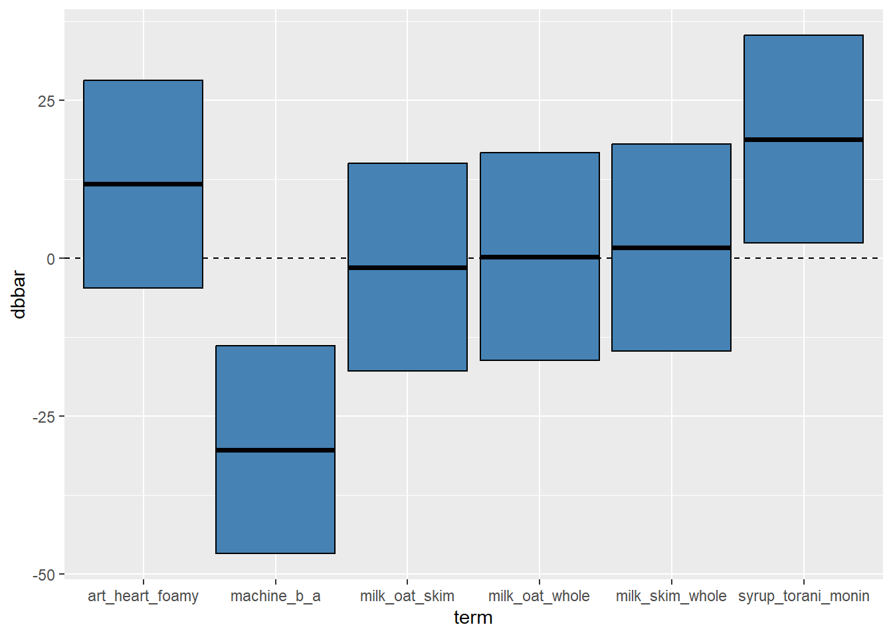
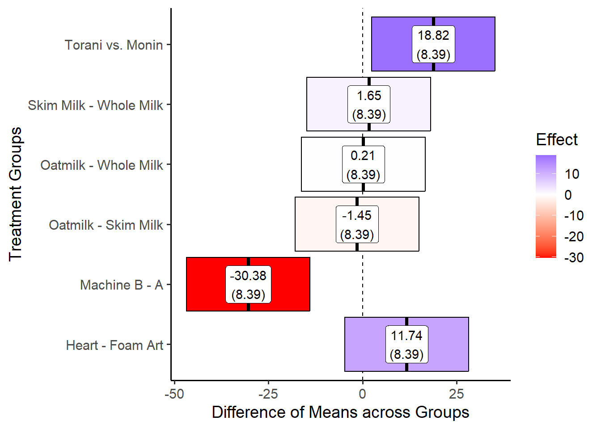

27 Factorial Design and Interaction Effects in R
Figure 2.1: Lattes! Photo Credit to Fahmi Fakhrudin
This workshop introduces methods for computing interaction effects in experiments in R, through a very caffeinated case of commercial product testing - lattes!
Getting Started
Factorial Design
Suppose a local coffee chain in upstate New York, Kim’s Coffee, faces repeated complaints from customers: while their coffeeshops are beloved, their lattes are just plain bad. With the holidays right around the corner, they need to produce better lattes ASAP, to attract cold holiday shoppers! Their local six-sigma expert recommends that one of their shops designs and implements a factorial-design experiment.
When you have a limited amount of time and/or resources, factorial-design experiments can be very cost-efficient. In this case, Kim’s Coffee staff are not sure why their lattes are bad - is it due to the espresso machine, the milk, the coffee syrups, or the latte art? They create 240 lattes, and randomly assign each latte order to the following treatments:
machine: Each latte order is randomly assigned to 1 of 2 espresso machines (machine"a"or"b").milk: For each machine, they then randomly assign the lattes to 1 of 3 types of milk ("whole","skim", and"oat"milk).syrup: For each type of milk, they randomly assign lattes with that milk to 1 of 2 brands of simple syrup ("torani"vs."monin").art: Finally, each is assigned to 1 of 2 types of latte art presentation ("heart"vs."foamy").
Finally, they measure the tastiness on a scale from 0 to 100.
Data & Packages

Figure 12.1: Coffee Shop Experiments? Photo by Photo by Nafinia Putra on Unsplash
They produce the following data, saved in lattes.csv, and available on Github at this link. Use the code below to load in our data!
# Load packages
library(tidyverse)
library(broom)
# Load in data!
# If you upload it to your workshops folder, read it in like this...
lattes = read_csv("workshops/lattes.csv")
# or
# If you want to download it straight from github, read it in like this...
lattes = read_csv("https://raw.githubusercontent.com/timothyfraser/sysen/main/workshops/lattes.csv")
# Check it out!
lattes %>% glimpse()## Rows: 240
## Columns: 6
## $ id <dbl> 1, 2, 3, 4, 5, 6, 7, 8, 9, 10, 11, 12, 13, 14, 15, 16, 17, 1…
## $ tastiness <dbl> 42.79289, 34.51512, 46.33578, 44.57469, 44.40918, 56.27327, …
## $ machine <chr> "a", "a", "a", "a", "a", "a", "a", "a", "a", "a", "a", "a", …
## $ milk <chr> "oat", "oat", "oat", "oat", "oat", "oat", "oat", "oat", "oat…
## $ syrup <chr> "monin", "monin", "monin", "monin", "monin", "monin", "monin…
## $ art <chr> "foamy", "foamy", "foamy", "foamy", "foamy", "foamy", "foamy…
27.1 Estimating Direct Effects
First, we can estimate the direct effects of one treatment versus another within the same variable (eg. lattes made by machine b versus machine a).
27.1.1 Difference of Grand Means \(\bar{\bar{d}}\)
To start, we have our raw data, where each row is a latte (1 observation), and for each group, we produced 10 lattes/observations (sometimes called 10 “replicates”).
We need to compute for each unique set of treatment conditions, what was the within-group mean (xbar), standard deviation sd, and sample size n? To get all unique combinations of machine, milk, syrup, and art that were tested, we can group_by() these variables, and then summarize() the mean(), sd(), and n() to get back a single row of statistics for each ‘set’ of unique treatments. We’ll call this data.frame of summary statistics per set groups.
# Let's make a data.frame 'groups'
groups = lattes %>%
# For each unique pairing of treatments tested,
group_by(machine, milk, syrup, art) %>%
# Return one row containing these summary statistics
summarize(xbar = mean(tastiness),
s = sd(tastiness),
n = n()) %>%
ungroup()
# Check it out!
groups %>% head()## # A tibble: 6 × 7
## machine milk syrup art xbar s n
## <chr> <chr> <chr> <chr> <dbl> <dbl> <int>
## 1 a oat monin foamy 43.3 6.60 10
## 2 a oat monin heart 57.4 5.65 10
## 3 a oat torani foamy 65.3 5.13 10
## 4 a oat torani heart 83.2 4.85 10
## 5 a skim monin foamy 45.0 4.65 10
## 6 a skim monin heart 56.9 4.29 10Next, we can compute the direct effect of a single variable’s treatment effect (eg. effect of machine b in the machine variable, compared to machine b), by taking (1) the mean tastiness of lattes produced by machine a (xbar[machine == "a"]), as well as (2) those produced by machine b (written as xbar[machine == "b"] below). We can do this several ways, some slower or faster, so I’ll write out the slower-but-clearer method, followed by the faster-but-messier method.
27.1.2 Slower-but-Clearer Method of Getting the Difference of Grand Means \(\bar{\bar{d}}\)
# Suppose you've got a series of means `xbar` across multiple treatment groups. We can....
step1 = groups %>%
summarize(
# put all means for treatment groups where machine == "b" into one column
xbar_machine_b = xbar[machine == "b"],
# put all means for treatment groups where machine == "a" into another column
xbar_machine_a = xbar[machine == "a"])
# View it
step1 %>% head(3)## # A tibble: 3 × 2
## xbar_machine_b xbar_machine_a
## <dbl> <dbl>
## 1 22.4 43.3
## 2 30.1 57.4
## 3 31.8 65.3Then…
step2 = step1 %>%
summarize(
# Take the grand mean of each vector of means
xbbar_machine_b = mean(xbar_machine_b),
xbbar_machine_a = mean(xbar_machine_a),
# Subtract the grand mean of a (control) from the grand mean of b (treatment)
# It helps to record for yourself the variable and order of subtraction (eg. b_a = b - a)
dbbar_machine_b_a = xbbar_machine_b - xbbar_machine_a)
# Check it!
step2## # A tibble: 1 × 3
## xbbar_machine_b xbbar_machine_a dbbar_machine_b_a
## <dbl> <dbl> <dbl>
## 1 32.2 62.6 -30.4
27.1.3 Faster-but-Messier Method of Getting the Difference of Grand Means \(\bar{\bar{d}}\)
The method discussed above is slower but clean and clear. On the other hand, if we need to make a lot of dbbar statistics for different groups, it could be helpful to speed this process up. Here’s a way to do that. We’ll use this below a bunch, so be sure to try both methods out yourself so you fully understand how they work.
# Taking our group means xbar,
groups %>%
# Take the grand mean of means from machine b and subtract the grand mean of means from machine a.
summarize(dbar_machine_b_a = mean(xbar[machine == "b"]) - mean(xbar[machine == "a"]))## # A tibble: 1 × 1
## dbar_machine_b_a
## <dbl>
## 1 -30.4
27.1.4 Estimating Many Difference of Grand Means \(\bar{\bar{d}}\)
Using the technique we learned above, let’s estimate many difference of grand means \(\bar{\bar{d}}\) all at once!
We can estimate direct effects by type of (1) machine, (2) milk, (3) syrup, and (4) art on the quality of our lattes (tastiness) by calculating overall difference of means statistics for each possible pairing of machine (a vs. b), milk (skim vs. oat, skim vs. whole, and whole vs. skim), syrup (torani vs. monin), and art (heart vs. foamy).
Notice also that when the number of treatments in a variable is 3 or greater (eg. milk contains oat, skim, and whole), it is no longer sufficient to just get the difference of grand means between 2 categories; we now can compute not just 1 \(\bar{\bar{d}}\) statistic, but 3!
Let’s do it!
dbbar = groups %>%
# Calculate a single line of summary statistics dbbar (d-double-bar, the difference of grand means)
summarize(
# How much tastier is a latte from machine "b" than machine "a", on average?
machine_b_a = mean(xbar[machine == "b"]) - mean(xbar[machine == "a"]),
# How much tastier is an oat milk latte than a skim milk latte, on average?
milk_oat_skim = mean(xbar[milk == "oat"]) - mean(xbar[milk == "skim"]),
# How much tastier is an oat milk latte than a whole milk latte, on average?
milk_oat_whole = mean(xbar[milk == "oat"]) - mean(xbar[milk == "whole"]),
# How much tastier is a skim milk latte than a whole milk latte, on average?
milk_skim_whole = mean(xbar[milk == "skim"]) - mean(xbar[milk == "whole"]),
# How much tastier is a latte with Torani brand syrup than with Monin brand syrup, on average?
syrup_torani_monin = mean(xbar[syrup == "torani"]) - mean(xbar[syrup == "monin"]),
# How much tastier is a latte with a 'heart' foam art, than just a normal foamy latte, on average?
art_heart_foamy = mean(xbar[art == "heart"]) - mean(xbar[art == "foamy"]) )
# Glimpse the results!
dbbar %>% glimpse()## Rows: 1
## Columns: 6
## $ machine_b_a <dbl> -30.37756
## $ milk_oat_skim <dbl> -1.447917
## $ milk_oat_whole <dbl> 0.2062967
## $ milk_skim_whole <dbl> 1.654213
## $ syrup_torani_monin <dbl> 18.81986
## $ art_heart_foamy <dbl> 11.73731
Figure 7.4: Does it matter if it has a heart? Photo Credit to Olivia Anne Snyder
27.2 Standard Errors for \(\bar{\bar{d}}\)
But how much would those effects \(\bar{\bar{d}}\) vary simply due to random sampling error, had they been drawn from a slightly different sample? We need to estimate a standard error around the sampling distribution of these statistics. For that, we’ll need some overall estimate of variance and sample size shared across all these \(\bar{\bar{d}}\) statistics.
27.2.1 Estimating Standard Error when \(s^2_i\) is known
If we suppose that the variances of each group are unequal (they probably are), then we can calculate a single standard error by taking the sum of the average variance within each group, then taking the square root of that total average variance. To do so, we must know the variance \(s^2_i\) for every treatment group \(i\) in our dataset. That can be written as:
\[ standard \ error \ \sigma = \sqrt{ \sum_{i=1}^{n}{ \frac{ s^{2}_i }{n_{i} } } } = \sqrt{ \frac{s^2_1}{n_1} + \frac{s^2_2}{n_2} + ... \frac{s^2_n}{n_n} } \\ where \ i = group, \ n = group \ sample \ size, \\ s^2_i = variance \ of \ group \ i \] We can code this extremely quickly as:
error = groups %>%
# calculate a single row of statistics overall
summarize(
# If we know the standard deviation and sample size of each group
# we can estimate the standard error directly
se = sqrt( sum(s^2 / n) ) )
# Check it!
error## # A tibble: 1 × 1
## se
## <dbl>
## 1 8.39
27.2.2 Using Pooled Variance to Estimate Standard Errors
On the other hand, if we have reason to believe that the variances of each group are more or less equal, we can simplify this equation, calculating just a single pooled variance \(s^2_i\) that gets applied throughout, like so:
\[ pooled \ variance = s^{2}_{p} = \frac{ \sum_{i=1}^{n}{ s^2_{i} \times v_i } }{ \sum_{i=1}^{n}{v_i} }, \\ where \ i = group, \\ v_i = n_i - 1 = degrees \ of \ freedom \ of \ group \ i, \\ s^2_i = variance \ of \ group \ i, \\ assuming \ equal \ variance \] Then, we could calculate the standard error with need for even fewer statistics, as: $ = $.
With R, the calculations are so quick for unequal variances that it is no longer especially helpful to assume equal variances. But, if you ever find yourself without the specific subgroup variances and need to estimate a standard error, you can use the equal variance formula for pooled variances to find a standard error.
We could code it like this:
error = groups %>%
# Get degrees of freedom for each group...
mutate(df = n - 1) %>%
# then calculate a single row of statistics overall
summarize(
# If we assume the variance is constant across groups (it probably isn't)
# we can take the weighted average of variances, weighted by group degrees of freedom
var_pooled = sum(s^2 * df) / sum(df),
s_pooled = var_pooled %>% sqrt(),
# Finally, get the standard error!
se = sqrt(s_pooled^2 * sum(1 / n)) )
# Take a peek!
error## # A tibble: 1 × 3
## var_pooled s_pooled se
## <dbl> <dbl> <dbl>
## 1 29.3 5.41 8.39Our standard errors assuming and not assuming equal variances end up pretty similar, so it looks like our variances must have been pretty equal across groups.
27.3 Pivoting Data with pivot_longer() & pivot_wider()
Let’s be honest - that was a lot of typing, and though it was fast, it got a little old! Good news: The tidyr and dplyr packages, which get loaded automatically with the tidyverse package, includes several functions for pivoting your data - meaning rearranging it quickly.
27.3.1 contains()
select(contains("string")) in dplyr lets you grab all variables in a data.frame that contain the following "string". For example:
## # A tibble: 1 × 3
## milk_oat_skim milk_oat_whole milk_skim_whole
## <dbl> <dbl> <dbl>
## 1 -1.45 0.206 1.65
27.3.2 pivot_longer()
pivot_longer()takes a set of column vectorscols = c(column1, column2, etc.), then stacks them on top of each other, sending the names of these columns to anamesvector and the values of these columns to avaluesvector. It pairs well withcontains("string").
dbbar %>%
select(contains("milk")) %>%
# We can pivot these columns...
pivot_longer(cols = c( milk_oat_skim, milk_oat_whole, milk_skim_whole) )## # A tibble: 3 × 2
## name value
## <chr> <dbl>
## 1 milk_oat_skim -1.45
## 2 milk_oat_whole 0.206
## 3 milk_skim_whole 1.65dbbar %>%
select(contains("milk")) %>%
# We can also just use contains to write a short hand
pivot_longer(cols = c( contains("milk")) )## # A tibble: 3 × 2
## name value
## <chr> <dbl>
## 1 milk_oat_skim -1.45
## 2 milk_oat_whole 0.206
## 3 milk_skim_whole 1.65Generally, I like to specify a set of column vectors NOT to pivot, which sends all other vectors to the names and values columns. This is much faster! We can write cols = -c(whatever), which says send all variables except whatever. You could even write cols = -c(), which just sends all the columns.
# For example...
dbbar %>%
select(contains("milk")) %>%
# pivot all columns EXCEPT milk_oat_skim
pivot_longer(cols = -c(milk_oat_skim))## # A tibble: 2 × 3
## milk_oat_skim name value
## <dbl> <chr> <dbl>
## 1 -1.45 milk_oat_whole 0.206
## 2 -1.45 milk_skim_whole 1.65## # A tibble: 3 × 2
## name value
## <chr> <dbl>
## 1 milk_oat_skim -1.45
## 2 milk_oat_whole 0.206
## 3 milk_skim_whole 1.65Finally, if you don’t select() anything, you can pivot all the variables at once! (as long as they are all numeric or all character vectors).
## # A tibble: 6 × 2
## name value
## <chr> <dbl>
## 1 machine_b_a -30.4
## 2 milk_oat_skim -1.45
## 3 milk_oat_whole 0.206
## 4 milk_skim_whole 1.65
## 5 syrup_torani_monin 18.8
## 6 art_heart_foamy 11.7
27.3.3 pivot_wider()
Finally, sometimes we need to spread out values from a long, “tidy” format into a wider, “matrix” format! For example, we did this earlier when getting the xbar values for machine a and machine b in their own columns, by typing xbar[machine == "a"], etc. But this takes a while, whereas pivot_wider() can do it quickly, all in one line.
It’s up to you which to use, but pivot_wider() can make your life a lot easier!
When you use pivot_wider(), we need to provide a set of id_cols, which is a vector of unique id columns we will use to make the rows in our data.
For example, if we want to pivot the machine and xbar columns into an xbar_a and xbar_b column, we need to tell R that each row should refer to an xbar value for lattes of a specific milk, syrup, and art, by saying id_cols = c(milk, syrup, art).
We then can tell pivot_wider(), grab the vector names_from the machine vector and the values_from the xbar vector.
# Check it out!
groups %>%
pivot_wider(id_cols = c(milk, syrup, art), names_from = machine, values_from = xbar) %>%
head()## # A tibble: 6 × 5
## milk syrup art a b
## <chr> <chr> <chr> <dbl> <dbl>
## 1 oat monin foamy 43.3 22.4
## 2 oat monin heart 57.4 30.1
## 3 oat torani foamy 65.3 31.8
## 4 oat torani heart 83.2 42.4
## 5 skim monin foamy 45.0 24.8
## 6 skim monin heart 56.9 28.7
27.4 Visualizing & Reporting Treatment Effects
Using the dbbar data.frame from section 1 and error data.frame from section 2 above, we can report and visualize the overall treatment effects.
27.4.1 Building a Table of Direct Effects
# Compile our direct effects of treatments
direct = dbbar %>%
# let's pivot our data,
pivot_longer(
cols = -c(),
# specifying names for our 'name' and 'value' columns
names_to = "term", values_to = "dbbar") %>%
# Let's add in our singular standard error shared across experiments
mutate(se = error$se) %>%
# And then estimate a 95% confidence interval!
mutate(lower = dbbar - qnorm(0.975) * se,
upper = dbbar + qnorm(0.975) * se) %>%
# And then write up a nice label
mutate(label = paste(round(dbbar, 2), "\n(", round(se, 2), ")", sep = ""))
# Let's view them!
direct## # A tibble: 6 × 6
## term dbbar se lower upper label
## <chr> <dbl> <dbl> <dbl> <dbl> <chr>
## 1 machine_b_a -30.4 8.39 -46.8 -13.9 "-30.38\n(8.39)"
## 2 milk_oat_skim -1.45 8.39 -17.9 15.0 "-1.45\n(8.39)"
## 3 milk_oat_whole 0.206 8.39 -16.2 16.6 "0.21\n(8.39)"
## 4 milk_skim_whole 1.65 8.39 -14.8 18.1 "1.65\n(8.39)"
## 5 syrup_torani_monin 18.8 8.39 2.38 35.3 "18.82\n(8.39)"
## 6 art_heart_foamy 11.7 8.39 -4.70 28.2 "11.74\n(8.39)"
27.4.2 Visualization Strategies
We can visualize these using geom_linerange(), geom_errorbar(), or geom_crossbar(). Let’s take a peek.
# You could use geom_crossbar, which uses ymin, ymax, and y
direct %>%
ggplot(mapping = aes(x = term, y = dbbar, ymin = lower, ymax = upper)) +
geom_hline(yintercept = 0, linetype = "dashed") +
geom_crossbar(fill = "steelblue")
# Or with geom_linerange(), which also uses ymin and ymax
direct %>%
ggplot(mapping = aes(x = term, y = dbbar, ymin = lower, ymax = upper)) +
geom_hline(yintercept = 0, linetype = "dashed") +
geom_linerange(size = 1) + geom_point(size = 3) Or….
Or….
# You could use geom_errorbar, which uses ymin, ymax, plus an optional width
direct %>%
ggplot(mapping = aes(x = term, y = dbbar, ymin = lower, ymax = upper)) +
geom_hline(yintercept = 0, linetype = "dashed") +
geom_errorbar(width = 0.25) + geom_point()
27.4.3 An Excellent Visual
But it we wanted to make a prettier chart, we could add color and labels, like so!
direct %>%
ggplot(mapping = aes(x = term, y = dbbar, ymin = lower, ymax = upper,
# specify a label and fill variable
label = label, fill = dbbar)) +
geom_hline(yintercept = 0, linetype = "dashed") +
geom_crossbar() +
# Add labels
geom_label(fill = "white") +
# Add a color pallet
scale_fill_gradient2(low = "red", mid = "white", high = "blue") +
# Add x and y axis labels
labs(y = "Difference of Means across Groups",
x = "Treatment Groups",
fill = "Effect") +
# Relabel our axis ticks
scale_x_discrete(
# Each label should take the original value and map it to a new, more readable version
labels = c("syrup_torani_monin" = "Torani vs. Monin",
"milk_skim_whole" = "Skim Milk - Whole Milk",
"milk_oat_whole" = "Oatmilk - Whole Milk",
"milk_oat_skim" = "Oatmilk - Skim Milk",
"machine_b_a" = "Machine B - A",
"art_heart_foamy" = "Heart - Foam Art")) +
# Flip the scale
coord_flip() +
# Add a theme
theme_classic(base_size = 14)
27.5 Interaction Effects
Alternatively, we might want to estimate treatment effects for combinations of treatments.
27.6 Estimating 2-way interactions
For example, do these lattes tend to taste better specifically when both conditions are true? Eg. let’s test the effect of having a latte from Machine B with Torani syrup, by comparing it against lattes made from Machine A with Monin syrup. This demonstrates the value added of both conditions.
groups %>%
summarize(
xbbar_b_torani = xbar[machine == "b" & syrup == "torani"] %>% mean(),
xbbar_a_monin = xbar[machine == "a" & syrup == "monin"] %>% mean(),
dbbar = xbbar_b_torani - xbbar_a_monin,
# Finally, we would use the same shared standard error that we calculated before
se = error$se)## # A tibble: 1 × 4
## xbbar_b_torani xbbar_a_monin dbbar se
## <dbl> <dbl> <dbl> <dbl>
## 1 38.4 50.0 -11.6 8.3927.7 Estimating 3-way interactions
We could even calculate a three-way interaction between machine type, syrup brand, and latte art, like so:
groups %>%
summarize(
# This time, we just add `art == "heart"` as an extra condition, and vice versa below
xbbar_b_torani_heart = xbar[machine == "b" & syrup == "torani" & art == "heart"] %>% mean(),
xbbar_a_monin_foamy = xbar[machine == "a" & syrup == "monin" & art == "foamy"] %>% mean(),
dbbar = xbbar_b_torani_heart - xbbar_a_monin_foamy,
# Finally, we would use the same shared standard error that we calculated before
se = error$se)## # A tibble: 1 × 4
## xbbar_b_torani_heart xbbar_a_monin_foamy dbbar se
## <dbl> <dbl> <dbl> <dbl>
## 1 43.1 43.2 -0.123 8.39But we can see that these threeway effects tend can often be quite small relative to the standard error. It is difficult to find statistically significant three-way effects.
27.8 Estimating Interactions in lm()
A quick strategy for estimating interaction effects in R can be using the lm() function.
27.8.1 Modeling Interactions
While it uses a regression model, rather than the difference of means, to estimate these effects, it tends to be pretty brief and doesn’t require making our groups, dbbar, or error data.frames.
# Using our raw data of observed lattes
m = lattes %>%
# Make a linear model, showing interactions with the '*' sign
lm(formula = tastiness ~ machine * milk * syrup * art)
# View our model!
m %>% tidy()## # A tibble: 24 × 5
## term estimate std.error statistic p.value
## <chr> <dbl> <dbl> <dbl> <dbl>
## 1 (Intercept) 43.3 1.71 25.3 1.64e-66
## 2 machineb -20.9 2.42 -8.63 1.37e-15
## 3 milkskim 1.67 2.42 0.689 4.92e- 1
## 4 milkwhole -1.90 2.42 -0.786 4.33e- 1
## 5 syruptorani 22.0 2.42 9.09 6.48e-17
## 6 artheart 14.1 2.42 5.84 1.88e- 8
## 7 machineb:milkskim 0.734 3.42 0.214 8.30e- 1
## 8 machineb:milkwhole 1.82 3.42 0.532 5.95e- 1
## 9 machineb:syruptorani -12.6 3.42 -3.69 2.80e- 4
## 10 milkskim:syruptorani 1.20 3.42 0.350 7.27e- 1
## # ℹ 14 more rowsWe see potentially significant interaction effects for the joint impact of machine b and torani syrup, as well as several strong direct effects. Three way effects though, are minimal at best.
27.8.2 Using predict() to visualize interaction effects
The big power of lm() in factorial experiments is getting to visualize these effects.
# We can generate a set of all observed combinations of our treatments as 'newdata
newdata = lattes %>%
group_by(machine, milk, syrup, art) %>%
summarize()
newdata %>% head()## # A tibble: 6 × 4
## # Groups: machine, milk, syrup [3]
## machine milk syrup art
## <chr> <chr> <chr> <chr>
## 1 a oat monin foamy
## 2 a oat monin heart
## 3 a oat torani foamy
## 4 a oat torani heart
## 5 a skim monin foamy
## 6 a skim monin heartThen, we can generate either "confidence" or "prediction" intervals - confidence intervals are a little narrower, used in estimating effects you’ve already observed, while prediction intervals are a little wider, used for estimating predicted quantities that you naturally want a little more caution around.
I like to save this as an object pred, then extract the results in a second step.
# For confidence intervals
pred = predict(m, newdata = newdata,
se.fit = TRUE, interval = "confidence", level = 0.95) %>%
# Extract just the fitted results and intervals
with(fit) %>%
# And convert it to a tibble
as_tibble()
# or for prediction intervals...
#predict(m, newdata = newdata,
# se.fit = TRUE, interval = "prediction", level = 0.95)
# See? Not very tidy
pred %>% head()## # A tibble: 6 × 3
## fit lwr upr
## <dbl> <dbl> <dbl>
## 1 43.3 39.9 46.7
## 2 57.4 54.1 60.8
## 3 65.3 61.9 68.7
## 4 83.2 79.9 86.6
## 5 45.0 41.6 48.3
## 6 56.9 53.5 60.2Now, we can bind the two sets of values together, either using tibble() or bind_col(), because they share the same rows.
To visual an interaction effect, we can now narrow into 4 predictions, showing all possible combinations of machine and syrup, while zooming into just one type of milk and art, to hold these other concepts constant.
viz = cis %>%
filter(machine %in% c("a", "b"),
syrup %in% c("torani", "monin"),
milk == "whole",
art == "heart") %>%
# add a label!
mutate(label = round(yhat, 2) )
# view it!
viz## # A tibble: 4 × 8
## machine milk syrup art yhat lower upper label
## <chr> <chr> <chr> <chr> <dbl> <dbl> <dbl> <dbl>
## 1 a whole monin heart 55.9 52.5 59.2 55.9
## 2 a whole torani heart 86.8 83.4 90.1 86.8
## 3 b whole monin heart 27.9 24.5 31.2 27.9
## 4 b whole torani heart 43.2 39.8 46.6 43.2And last, we can visualize the effect with geom_ribbon() or any other technique that accepts ymin and ymax. We just have to remember to put one variable on the x axis (eg. machine) and one variable as the group and fill, to distinguish our two lines.
viz %>%
ggplot(mapping = aes(x = machine, group = syrup, fill = syrup,
y = yhat, ymin = lower, ymax = upper, label = label)) +
geom_ribbon() +
geom_line() +
# Plot the labels, bumping the text upwards!
geom_text(nudge_y = 5) +
labs(x = "Espresso Machine Type",
y = "Predicted Tastiness (0-100) with 95% CIs",
fill = "Syrup Brand") +
theme_classic(base_size = 14) How should we interpret this visual? Well, let’s just describe what we see! More descriptive language is always better than less, when it comes to explaining results for new viewers. Here’s an example descriptive!
How should we interpret this visual? Well, let’s just describe what we see! More descriptive language is always better than less, when it comes to explaining results for new viewers. Here’s an example descriptive!
The figure above visualizes our model
m’s predicted values for lattetastinesswith 95% confidence intervals, assuming those lattes were made withwhole milkand hadheartfoam art, but their only differences were themachinethat made them and the brand ofsyrupthey used.We see that lattes made from espresso machine B tend to be much less tasty than lattes made from espress machine A, given either type of syrup brand. Torani syrups see a sharper decrease than Monin syrups, but lattes made from Torani syrups remain much tastier.
The lines do not cross in the given treatment categories, indicating that, at least as far as these dichotomous categories are concerned, the interaction effect between machine type and syrup brand is statistically significant at a 95% level of confidence - that is, we are at least 95% certain that lattes from torani syrups and machine B are tastier than lattes from monin syrups and machine A.
27.8.3 Finding the best model with anova()
We can even use the anova() function (not to be confused with aov()) to find the best fitting model from a set of model objects. Here, we compare the second model against the first (as opposed to the model against an intercept, as in traditional anova).
Then, we calculate the residual sum of squares in both, calculate the extra explained sum of squares in the second model, and estimate an F statistic. If the F statistic is statistically significant and the RSS has decreased, we would say that our second model fits better.
# Let's make a second model for comparison against the first.
m2 = lattes %>%
# Make a linear model, showing interactions with the '*' sign
lm(formula = tastiness ~ machine * milk * syrup)
# Here, for instance, there is a significant difference, but the RSS increased,
# so we know that model 1 is better than model 2
anova(m, m2)## Analysis of Variance Table
##
## Model 1: tastiness ~ machine * milk * syrup * art
## Model 2: tastiness ~ machine * milk * syrup
## Res.Df RSS Df Sum of Sq F Pr(>F)
## 1 216 6330
## 2 228 16182 -12 -9852 28.015 < 2.2e-16 ***
## ---
## Signif. codes: 0 '***' 0.001 '**' 0.01 '*' 0.05 '.' 0.1 ' ' 1